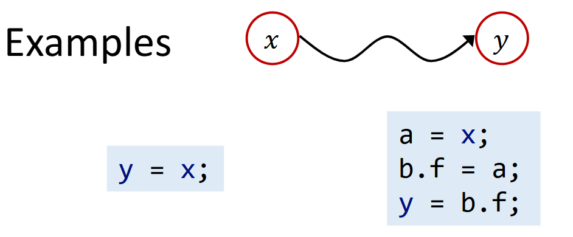
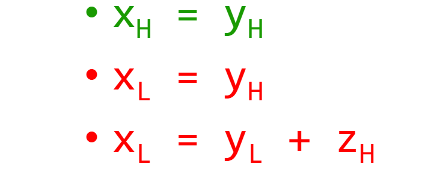
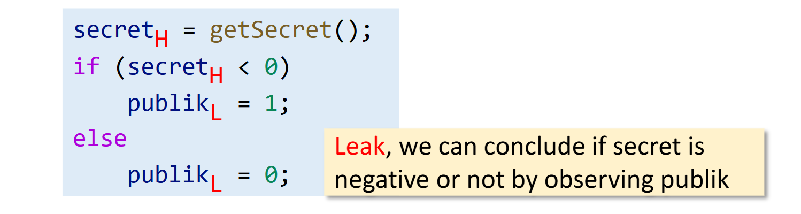
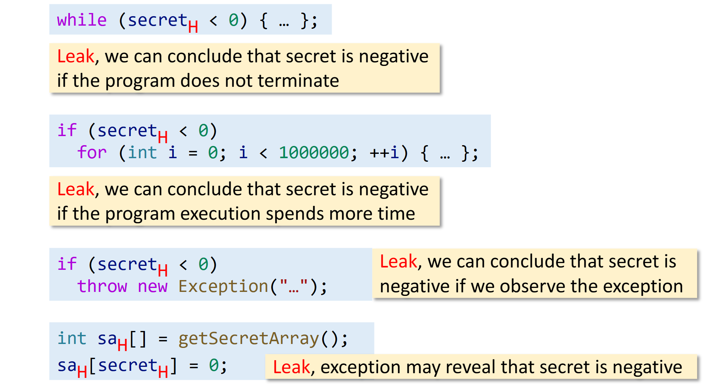
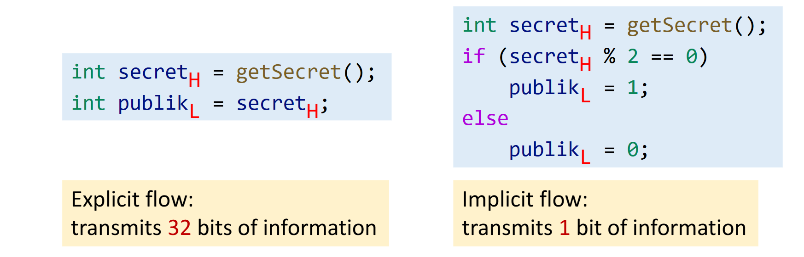
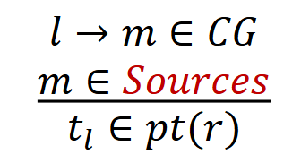
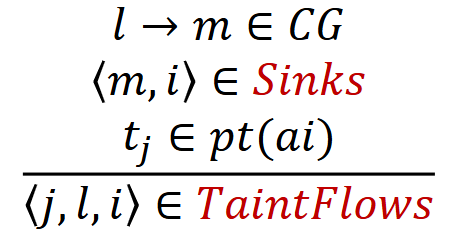

Computer Security
- Goals
- Dependability
- Data safety
- …
- Adversaries
- Crackers
- Cyber attackers
- …
Causes of exploited vulnerabilities（造成已被利用的漏洞的原因）
-
Injection errors
-
Information leaks
这两点其实就是本节课要解决的问题
Information Flow Security
我们要防止不必要的信息流动 保护信息安全
Access Control vs. Information Flow Security
- 访问控制（保护敏感数据的标准方法）
- 检查程序是否具有访问某些信息的权限
- 关注信息的访问方式
- 信息流安全（端到端）
- 跟踪信息如何流经程序，以确保程序安全地处理信息
- 关注信息的传播方式
Information Flow
信息流：如果变量 x 中的信息被转移到变量 y，那么存在信息流 y → x
Information Flow Security
将信息流与安全联系起来
- 将程序变量分类为不同的安全级别
- 指定这些级别之间允许的流，即信息流策略
Security Levels (Classes)
-
最基本的模型是两级策略，即一个变量被分为两个安全级别之一：
- H，意为高安全性、秘密信息
- L，表示低安全性，公共可观察信息
- h = getPassword(); // h is high security
- broadcast(l); // l is low security
-
安全级别可以建模为 lattice*
- L ≤ H
Information Flow Policy
- 限制信息在不同安全级别之间的流动方式
- 互不干扰政策*
- 要求 high 变量的信息对 low 变量的信息没有影响（即不应干扰）
- 直观地说，您不应该能够通过观察低变量来得出任何关于高信息的信息结论
Noninterference
- 要求 high 变量的信息对 low 变量的信息没有影响（即不应干扰）
确保信息仅在格中向上流动
Confidentiality and Integrity
- Confidentiality（保密性）
- 防止机密信息泄露
- Integrity（正确性）
- 防止不受信任的信息损坏（受信任的）关键信息
- x = readInput(); // untrusted cmd = “…” + x; execute(cmd); // critical (trusted)
- Injection errors ( #1 cause of vulnerabilities in 2013-20192)
- Command injection
- SQL injection
- XSS attacks
- …
Integrity, Broad Definition
- 确保数据的正确性、完整性和一致性
- 正确性
- 例如，为了实现信息流的完整性，（受信任的）关键数据不应被不受信任的数据破坏
- 完整性
- 例如，数据库系统应该完整地存储所有数据
- 一致性
- 例如，文件传输系统应确保两端（发送方和接收方）的文件内容相同
Explicit Flows and Covert Channels
我们已经看到了信息是如何通过直接复制流动的。这称为显式流。
这种信息流称为隐式流，当控制流受到秘密信息的影响时，可能会出现这种流。
机密控制下，副作用的任何差异都会对有关控制的信息进行编码，这些信息可能是可公开观察的，并泄露机密信息。
通过计算系统向信息发送信号的机制称为通道。
利用主要目的不是信息传输的机制的通道称为隐蔽通道*。
-
Implicit flows（隐式流）
信号信息通过程序的控制结构泄露
-
Termination channels（终端通道）
信号信息通过计算的（非）终止泄露
-
Timing channels（计时通道）
信号信息通过计算时间泄露
-
Exceptions（异常）
信号信息通过异常泄露
显式流通常比隐蔽通道携带更多的信息，因此我们专注于显式流
Taint Analysis
- 污点分析是最常见的信息流分析。它将程序数据分为两种：
- 受关注的数据，某些类型的标签与数据相关联，称为受污染数据
- 其他数据，称为未受污染的数据
- 受污染数据的来源称为来源。在实践中，污染数据通常来自某些方法的返回值（被视为源）。
- 污点分析跟踪受污染的数据如何流经程序，并观察它们是否可以流向受关注的位置（称为 sinks ）。在实践中，sinks 通常是一些敏感的方法。
Taint Analysis: Two Applications
-
保密性
-
来源：密钥数据来源
-
Sink：泄漏
-
信息泄露
x = getPassword(); // source y = x; log(y); // sink
-
-
正确性
-
来源：不可信数据的来源
-
Sink：关键计算
-
注入错误
x = readInput(); // source cmd = “…” + x; execute(cmd); // sink
-
污点分析能够同时检测出这两种不受欢迎的信息流，因为他们是对称的。
Taint and Pointer Analysis, Together*
污点分析/指针分析的本质是跟踪污点数据/抽象对象如何流经程序
- 将受污染的数据视为对象
- 将源视为（受污染数据的）分配站点
- 利用指针分析传播受污染的数据
Domains and Notations（域和符号）
| Variables: | x, y ∈ V |
| Fields: | f, g ∈ F |
| Objects: | oi, oj ∈ O |
| Tainted data: | ti, tj ∈ T ⊂ O |
| Instance fields: | oi.f, oj.g ∈ O × F |
| Pointers: | Pointer = V ⋃ (O × F) |
| Points-to relations: | pt : Pointer → P(O) |
- P(O) denotes the powerset of O（P(O)表示 O 的幂集）
- pt(p) denotes the points-to set of （pt(p) 表示 p 的指向的集合）
- ti denotes the tainted data from call site i
Taint Analysis: Inputs & Outputs
-
Inputs
- Sources：一组源方法（对这些方法的调用返回受污染的数据）
- Sinks：一组具有敏感参数的 sink 方法（污染流向这些方法的参数的数据流违反了安全策略）
-
Outputs
-
TaintFlows：一组 source 和 sink 调用的元组
E.g.,<i,j,k> ∈ TaintFlows 表示来自调用的受污染数据站点 i（调用 Source 方法）可能会流向调用站点 j（调用 Sink 方法）的第 k 个参数。
-
Rules: Call
处理 sources（生成受污染的数据）
| Kind | Statement | Rule |
|---|---|---|
| Call | l: r = x.k(a1,...,an) |  |
| Call | l: r = x.k(a1,...,an) |  |
其余的和指针分析一样